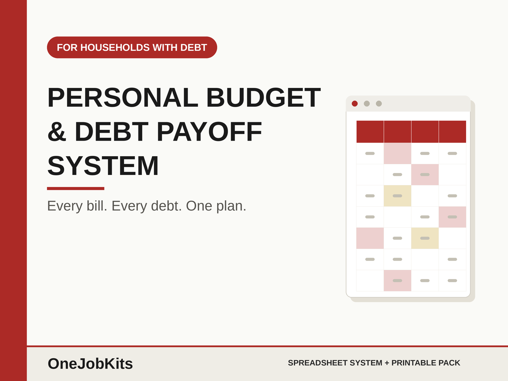

OneJobKits · Kit #18
Personal Budget & Debt Payoff System — budget planner spreadsheet

If you searched for a budget planner spreadsheet, your money probably has the usual problem — and it is not an income problem. It is a visibility problem. The bills live in five different apps, the card balances live in statements nobody opens, and the month runs on memory — so the month always wins.
Start free, on this page: the One-Month Budget Starter below plans one real month on paper. The full system it comes from turns the lights on permanently — one workbook holds your monthly budget, every debt, both payoff orders, every bill's due date and every savings goal, and the pages are linked, so you type a number once and it shows up everywhere it belongs.
Free download — start with the One-Month Budget Starter
The One-Month Budget Starter is a 3-page fillable PDF (147 form fields): the one-month budget worksheet (planned vs actual), the bill checklist plus debt snapshot page, and a month-end review page. Print it or type into it — one month, planned before it starts.
Download the free one-month budget starter (PDF)Get it on Gumroad instead
What the starter does not do: it plans one month and then stops. The full system below links the month to the debts — both payoff orders ranked automatically, the whole payoff simulated month by month, the annual summary, and a worked example household whose arithmetic you can check line by line.
What's inside the full kit
- Budget & debt workbook (Excel + Google Sheets) — 7 connected tabs, no macros; yellow cells are yours, blue cells calculate
- Dashboard — the whole household picture on one page: this month, the debt total, months to debt-free, savings progress
- Monthly budget planner — planned vs actual on every line, with the debt lines pulled automatically from your debt list and payoff plan so the pages can never disagree
- Debt list with automatic payoff ranks — type in each balance and APR once; the snowball order (smallest balance first) and avalanche order (highest APR first) sort themselves
- Debt payoff planner — both methods compared (months to debt-free, total interest, what you save vs paying minimums only) plus a month-by-month estimate of the balance falling for up to 72 months
- Bill calendar — every bill, due day, and autopay status on one page, debt minimums included
- Savings goal tracker — targets, saved so far, % complete, and months to go, calculated per goal
- Annual summary — the year on one page, including the interest-paid column that changes behaviour
- Worked example file — the full system run for a fictional household with $45,640 of debt, both payoff methods simulated debt by debt
- 8-page setup guide (PDF) — the one-hour setup, the two methods in plain English, the 30-minute monthly money meeting, and troubleshooting
- 6-page printable budget pack (fillable PDF) — monthly budget worksheet, bill checklist, debt snapshot, weekly spending tracker, savings tracker, and month-end review, for households that run money better on paper
- Pro version ($49) adds: the Annual Review tab (year-end numbers, habit scores, next-year targets, housekeeping checklist) and the Net Worth Tracker + History tabs (assets minus liabilities, logged quarterly so you can watch the whole scoreboard move, not just the debt)
A filled example — so you can see the finished thing
The kit ships with the whole system already run for one fictional household — the Ellis household, carrying $45,640 of debt — so every number on this page can be traced to an entry, not a promise. Here is the comparison the payoff planner produces from their balances and APRs:
| Snowball (smallest balance first) | Avalanche (highest APR first) | |
|---|---|---|
| Months to debt-free | 40 months | 40 months |
| Total interest | $7,092 | $6,661 |
| Difference | Avalanche costs $431 less on this household — and the workbook shows both, debt by debt, so the choice is yours with the arithmetic open in front of you | |
Your household will produce different numbers — that is the point. The example exists so you can see exactly how every figure is produced before your real balances go anywhere near it.
Who it is for
Households carrying card, loan, or student debt who want one honest system for the budget and the payoff — especially couples running money together, and anyone whose current "system" is a banking app and a feeling.
Who it is not for
Anyone wanting financial advice, a debt-settlement or consolidation service, credit repair, or an outcome guarantee. This kit gives no advice and negotiates nothing — it organises your own numbers and does the arithmetic, openly, from figures you enter. It is also not a budgeting app: there is no bank connection and no subscription; the files are yours.
Questions buyers ask
- Snowball or avalanche — which debt payoff order saves more?
- On pure arithmetic, avalanche (highest APR first) usually costs less interest — in the kit's worked example it saves $431 over snowball on $45,640 of debt, with the same 40-month finish. Snowball (smallest balance first) clears whole debts sooner, which some households find keeps them going. The workbook ranks your debts both ways and simulates both, so you choose with your own numbers in front of you rather than a slogan.
- Is this financial advice?
- No. It is an organisational template and calculator system only — not financial, tax, or legal advice, and not a debt-relief, credit-counselling or lending service. It does not predict or promise any result; every figure is a calculation from the balances, APRs and payments you enter, and your creditors' statements are the final word.
- Does it connect to my bank or accounts?
- No — deliberately. There is no bank connection, no login and no subscription. You enter your balances and bills once, update them in a short monthly sitting, and the files stay yours on your own machine.
- How long does it take to set up?
- The setup guide is built around a one-hour first setup: balances and APRs onto the debt list, bills onto the calendar, this month's lines into the planner. After that, the routine is a 30-minute monthly money meeting — planned vs actual, payoff progress, next month's bills.
- What does the free starter cover, and what does the full system add?
- The starter plans one month on paper: budget worksheet, bill checklist and debt snapshot, month-end review. The full system links the month to the debts — automatic payoff rankings, a month-by-month payoff simulation for up to 72 months, the bill calendar, savings goals and the annual summary, plus the worked example and the printable pack.
- What does the Pro version add?
- The Annual Review tab — year-end numbers, habit scores, next-year targets and a housekeeping checklist — and the Net Worth Tracker with History tabs: assets minus liabilities, logged quarterly, so you can watch the whole scoreboard move rather than only the debt total.
- Excel or Google Sheets?
- Both formats are included for the workbook, with no macros — yellow cells are yours to type in, blue cells calculate. The printable pack and the free starter are fillable PDFs.
Prices
Standard: $29 · Pro: $49 — one-time payment, digital download. No subscription; the files are yours.
Can't find the kit you need?
We build it. Ask us — first asker gets it at half the shelf price. Tell us the job at onejobkits.com and we will build the kit for it.
Related kits
Please know: this is an organisational template and calculator system only — not financial, tax, or legal advice, and not a debt-relief, credit-counselling, or lending service. It does not predict or promise any result. Interest and payoff figures are calculations and estimates based on the balances, APRs, and payments you enter; your creditors' statements are the final word. The example household, people, and figures are fictional and included only to show how the system works.